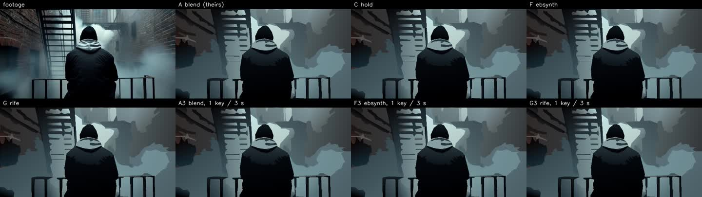
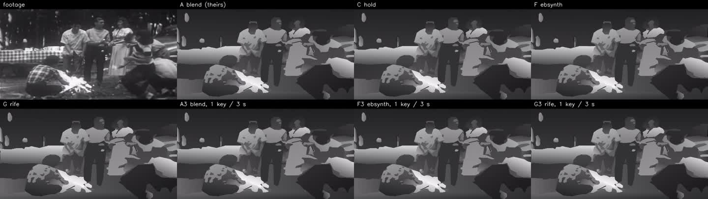
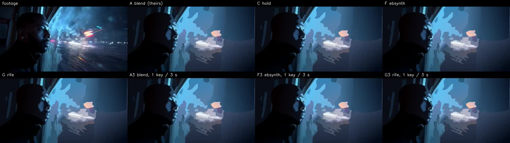
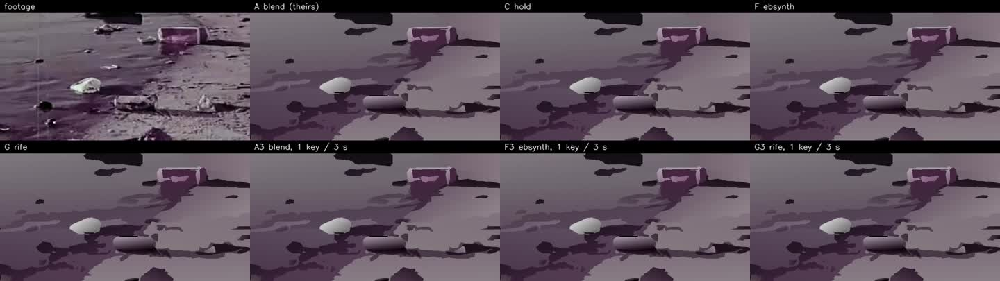
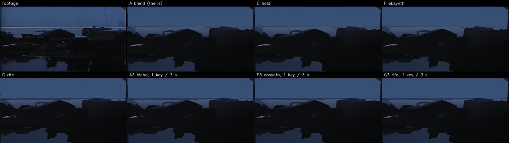
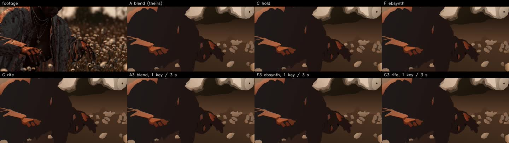
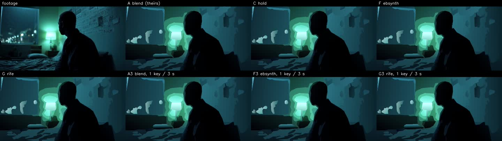
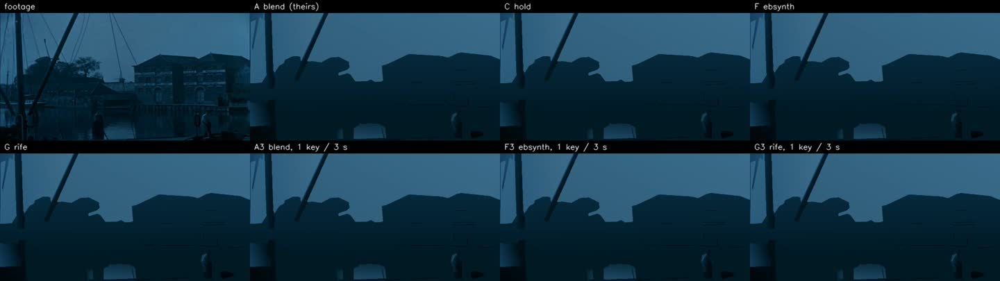
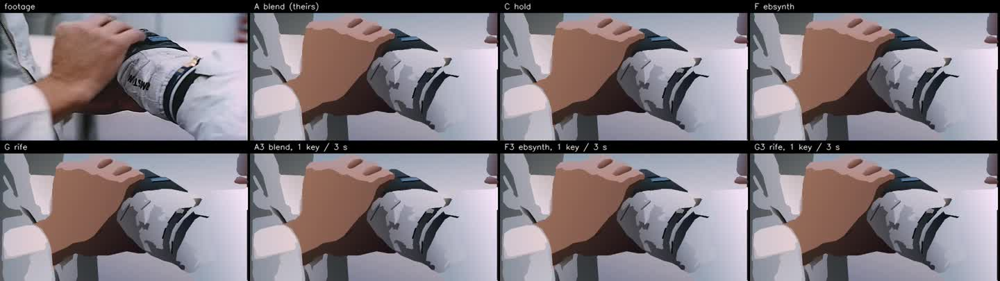

Found film against our footage, and seven ways to make the frames between drawings.
Every number here is measured on the film itself: 165 drawn patches for the first table, 9 patches run every way for the second. How each frame is made · the films.
1 · Found film and our footage, as cels
Found film draws better per keyframe than our own footage (colour error 4.43 against 5.62, value structure 0.907 against 0.884): at 640 px, mostly without colour noise, it simplifies into fewer shapes (45 against 60). It plays a little worse (pops 0.49/s against 0.21/s) and costs more (30.5 s of drawing per second against 25.6): old film cuts and flickers inside a patch, and every cut forces another drawing. Our own film keyframes (family "film", the fastest footage) are the hardest of all.
| n | source px | b&w | motion | ΔE ↓ | value SSIM ↑ | edges F ↑ | shapes | pops/s ↓ | ghost (1 = none) | track ↑ | drawing s per film s | |
|---|---|---|---|---|---|---|---|---|---|---|---|---|
| found film (archive) | 97 | 640 | 7 | 5.20 | 4.43 | 0.907 | 0.598 | 45 | 0.49 | 1.069 | 0.880 | 30.50 |
| our footage, all | 68 | 1280 | 4 | 5.83 | 5.62 | 0.884 | 0.581 | 60 | 0.21 | 1.056 | 0.830 | 25.60 |
| markov | 33 | 1280 | 0 | 5.55 | 5.64 | 0.892 | 0.581 | 59 | 0.23 | 1.055 | 0.874 | 28.05 |
| other | 21 | 1936 | 0 | 7.98 | 5.38 | 0.884 | 0.589 | 62 | 0.00 | 1.070 | 0.829 | 20.00 |
| film | 10 | 1688 | 1 | 10.90 | 6.05 | 0.874 | 0.578 | 65 | 1.88 | 1.063 | 0.587 | 22.25 |
| halfworld | 3 | 1280 | 3 | 3.77 | 4.06 | 0.874 | 0.602 | 56 | 1.25 | 0.994 | 0.419 | 27.20 |
2 · The frames between drawings
The same keyframe drawings, made into in-betweens seven ways. Compute counts the in-betweens and the drawings (about 25 s of the full stack per drawing).
our footage · 4 patches
| pops/s ↓ | ghost (1 = none) | track ↑ | between-frames compute, s per film s | total with drawings, s per film s | |
|---|---|---|---|---|---|
| A · blend (theirs) | 0.00 | 1.051 | 0.626 | 0.8 | 28.4 |
| C · hold | 1.30 | 1.009 | 0.008 | 0.0 | 27.5 |
| F · EbSynth | 0.11 | 0.743 | 0.862 | 57.2 | 84.7 |
| G · RIFE | 0.34 | 0.980 | 0.125 | 0.9 | 28.4 |
| A3 · blend, 1 drawing / 3 s | 0.40 | 1.011 | 0.700 | 0.8 | 12.3 |
| F3 · EbSynth, 1 drawing / 3 s | 0.07 | 0.643 | 0.805 | 54.6 | 66.1 |
| G3 · RIFE, 1 drawing / 3 s | 0.58 | 0.911 | -0.128 | 0.4 | 12.0 |
found film · 5 patches
| pops/s ↓ | ghost (1 = none) | track ↑ | between-frames compute, s per film s | total with drawings, s per film s | |
|---|---|---|---|---|---|
| A · blend (theirs) | 0.82 | 1.064 | 0.898 | 1.1 | 28.9 |
| C · hold | 1.20 | 1.003 | 0.125 | 0.0 | 27.7 |
| F · EbSynth | 0.06 | 0.712 | 0.941 | 83.8 | 111.5 |
| G · RIFE | 0.14 | 0.969 | 0.285 | 1.1 | 28.8 |
| A3 · blend, 1 drawing / 3 s | 0.83 | 1.049 | 0.898 | 1.1 | 13.3 |
| F3 · EbSynth, 1 drawing / 3 s | 0.03 | 0.665 | 0.934 | 76.9 | 89.2 |
| G3 · RIFE, 1 drawing / 3 s | 0.54 | 0.931 | 0.172 | 0.5 | 12.8 |









3 · What each way allows
| way | compute | output | editing | re-timing | quality and failure |
|---|---|---|---|---|---|
| A · blend (theirs) | 29 s of computer per second of film, almost all of it drawing a keyframe every second | raster frames | change a keyframe drawing, re-run the in-betweens | needs the footage’s flow | tracks well (track 0.78); boils where neighbouring drawings disagree, ghosts in fast motion |
| C · hold | 28 s per film s: no in-between work at all | each frame IS a drawing: the scene program’s vector SVG, editable and re-timable | any held drawing can be redrawn by hand or re-run alone | free: holds are the classic way to time a cartoon | does not move between drawings (track 0.07); pops at each new drawing (1.24/s) |
| F · EbSynth | 100 s per film s; the synthesis itself (CPU) costs more than the drawings | raster frames that keep the drawing’s own texture | change a keyframe drawing, re-synthesise | follows the footage’s structure frame by frame | tracks best and ghosts least (track 0.91, ghost 0.73); smears where new content appears |
| F3 · EbSynth, a drawing every 3 s | 79 s per film s, a third of the drawings | as F | fewer drawings to fix by hand | as F | keeps EbSynth’s quality with a third of the drawings (track 0.88) |
| G · RIFE | 29 s per film s; the in-betweens are GPU-fast | raster frames: learned morphs between drawings | change a drawing, re-run | free: it never looks at the footage | smooth between drawings but blind to the footage between them (track 0.21); best used to turn 12 drawings a second into 24 |
| B / D / E · carry, planes, morph | cheap (flow only) to moderate (vector rendering) | E alone gives vectors in every frame | E: move vertices by hand | D and E could re-time freely | lost on every patch in the first bench: carry tears figures, planes ghost them, morph mismatches shapes — all three need keyframe drawings that share their shapes first |